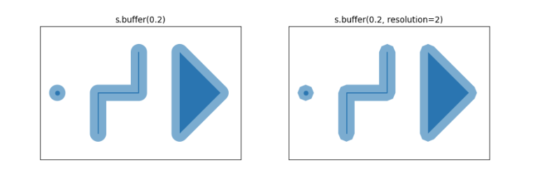

Lab 3 - Spatial Relations#
Th. 17.10.2024 15:00-17:00
1 - Calculate Spatial Relations and Plotting#
1.1 - Read Data#
import pandas as pd
import geopandas as gpd
import matplotlib.pyplot as plt
# read the same shapefile from lab 2
df_countries = gpd.read_file('ne_10m_admin_0_countries/ne_10m_admin_0_countries.shp')
# check coordinate reference systems
df_countries.crs
# read point dataset of earthquakes catalogue(1970-2014) from Humanitarian Data Exchange
url = 'https://data.humdata.org/dataset/4881d82b-ba63-4515-b748-c364f3d05b42/resource/10ac8776-5141-494b-b3cd-bf7764b2f964/download/earthquakes1970-2014.csv'
earthquakes = pd.read_csv(url)
earthquakes.head()
1.2 - Plot the earthquake dataset#
from shapely.geometry import Point
from geopandas import GeoDataFrame
# zip x and y coordinates into single feature
geometry = [Point(xy) for xy in zip(earthquakes['Longitude'], earthquakes['Latitude'])]
# create a GeoPandas dataframe
# designate coordinate system to be the same with countries dataframe
df_earthquakes = GeoDataFrame(earthquakes, crs=df_countries.crs, geometry=geometry)
# plot df_countries as base map
df_earthquakes.plot(ax=df_countries.plot(figsize=(12, 8)), marker='o', color='red', markersize=12);
1.3 - Spatial Joins between two GeoDataFrames#
A spatial join uses binary predicates such as intersects and crosses to combine two GeoDataFrames based on the spatial relationship between their geometries.
A common use case might be a spatial join between a point layer and a polygon layer where you want to retain the point geometries and grab the attributes of the intersecting polygons.
Types of spatial joins:
LEFT OUTER JOIN
(how="left"): keep all rows from the left and duplicate them if necessary to represent multiple hits between the two dataframes. Retaining the geometries of the left.RIGHT OUTER JOIN
(how="right"): keep all rows from the right and duplicate them if necessary to represent multiple hits between the two dataframes. Retaining the geometries of the right.INNER JOIN
(how="inner"): keep rows from the right and left only where their binary predicate is TRUE and lose all rows that do not. Retaining the geometries of the left.
More information on spatial joins can be found here.
# a left outer join for point earthquake data within the country polygon
join_left_df = df_earthquakes.sjoin(df_countries, how="left", predicate="within")
# get the row count of the dataframe after spatial join
len(join_left_df)
You can use this to find out all unique country names in df_countries:
df_countries.SOVEREIGNT.unique()
# get all earthquakes happened in Japan for example
# you can change it to other countries here
country_of_interest = 'Japan'
country_earthquakes = join_left_df[join_left_df['SOVEREIGNT'] == country_of_interest]
# get the row count of country_earthquakes dataframe
len(country_earthquakes)
# get a specific country from the countries base map
country_boundary = df_countries[df_countries['SOVEREIGNT'] == country_of_interest]
# plot earthquake data of the specific country
country_earthquakes.plot(ax=country_boundary.plot(figsize=(12, 8)), marker='o', color='red', markersize=12)
1.4 - Buffer#
Returns a GeoSeries of geometries representing all points within a given distance of each geometric object.
More information on buffer can be found here. 
# note on the projected CRS before calculating buffer
# otherwise you will see this warning:
# UserWarning: Geometry is in a geographic CRS. Results from 'centroid' are likely incorrect.
# Use 'GeoSeries.to_crs()' to re-project geometries to a projected CRS before this operation.
# create a new geodataframe for the buffer polygon
# unit of buffer distance depends on the projected CRS, for epsg3857 it is meter
country_buffer = gpd.GeoDataFrame(geometry=country_boundary.to_crs('epsg:3857').geometry.buffer(20000))
# a inner join of point earthquake data with the buffer polygon
country_buffer_earthquakes = df_earthquakes.sjoin(country_buffer.to_crs(df_earthquakes.crs), how="inner", predicate="within")
# get the row count of the dataframe after buffer
len(country_buffer_earthquakes)
# plot earthquake data of the specific country within the 20km buffer
country_buffer_earthquakes.plot(ax=country_buffer.to_crs('epsg:4326').plot(figsize=(12, 8)), marker='o', color='red', markersize=12)
2 - Plotting with Folium#
Folium builds on the data wrangling strengths of the Python ecosystem and the mapping strengths of the leaflet.js library. This allows you to manipulate your data in Geopandas and visualize it on a Leaflet map via Folium.
More information on Folium can be found here.
2.1 - Leaflet#
Leaflet is the leading open-source JavaScript library for mobile-friendly interactive maps. For more information, docs and tutorials, check out the official website.
2.2 - Installation#
Folium should be already installed. If you cannot do import folium, try the command:
conda install -c conda-forge folium
# get country centroid
centroid = df_countries[df_countries['SOVEREIGNT'] == country_of_interest]
# note on the projected CRS before calculating centroid
# otherwise you will see this warning:
# UserWarning: Geometry is in a geographic CRS. Results from 'centroid' are likely incorrect.
# Use 'GeoSeries.to_crs()' to re-project geometries to a projected CRS before this operation.
centroid = country_boundary.to_crs('epsg:3857').centroid.to_crs(country_boundary.crs).iloc[0]
(centroid.y, centroid.x)
import folium
# add a start location and adjust the zoom level
earthquake_map = folium.Map(location=(centroid.y, centroid.x),
zoom_start=5, tiles="OpenStreetMap")
# plot the earthquake data
# circle size is inversely proportional to the depth
for i in range(0, len(country_earthquakes)):
folium.CircleMarker(location=[country_earthquakes['Latitude'].iloc[i],
country_earthquakes['Longitude'].iloc[i]], color='red',fill=True,
radius=100/country_earthquakes['Depth'].iloc[i]).add_to(earthquake_map)
earthquake_map
3 - Submission#
Try the code blocks above, choose a different country to map, and submit the .ipynb file.